Kaggle Wyzwanie - Titanic
Wstęp
Witam wszystkich chętnych którzy chcieli by spróbować wyzwania Kaggle - Titanic. Jest to pierwsze zadanie z którym stykają się wszyscy na Kaggle zaraz po rejestracji.
Wyzwanie jest zaplanowane na 2 tygodnie od poniedziałku (09-07-2018) do następnego poniedziałku (23-07-2018). Jeśli termin już minął ta stroną będzie cały czas na Github tak żeby mieć możliwość przystąpić później.
Będzie on zarówno w R jak i Python tak żeby każdy nie był pokrzywdzony. Jest on podstawowy, dlatego można pytać o wszystko (od instalacji pythona, co to jest pip, po statystykę, itp..).
Planuje żeby w ciągu tygodnia robić 3 omówienia (w poniedziałek, środę i piątek) rozłożone na dwa tygodnie tak żeby każdy mógł mieć czas na przemyślenia, napisanie kodu i jeszcze pytania.
- (poniedziałek) Opis problemu, Importowanie danych i podstawowe informacje
- (środa) Wykresy i wyszukiwanie danych
- (piątek) Wypełnianie pustych danych i normalizacja Danych
- (poniedziałek) Klasyfikacja - algorytm i
- (środa) Poprawianie Modelu
- (piątek) Podsumowanie
Podczas każdego omówienia postaram się opisać (github) co się dzieje i podać rozwiązanie dla każdego języka. W razie jakilkowiek pytań będzie można zadawać na slacku. Prosze mieć na uwadzę że też się uczę części rzeczy (zwłaszcza R), tak więc jak będzie jakiś błąd, niezrozumienie z mojej strony albo uwagi, proszę mnie o tym poinformować a ja to postaram się poprawić 😃
Wyzwanie można śledzić na grupie: https://www.facebook.com/groups/1733307126704677/
Osoby chętne, proszę dołączyć do slacka: https://kagglepolska.slack.com (link na grupie) A pytania można zadawać na grupie pod #titanic
Przed warto sobie zainstalować środowiska. Do pythona polecam Anaconda które zawiera Pythona oraz edytor Spyder:
https://www.anaconda.com/download/
Do R Edytor: Rstudio https://www.rstudio.com/products/rstudio/download/ oraz interpretator: Microsoft R Open https://mran.microsoft.com/open
Link do Titanic na kaggle: https://www.kaggle.com/c/titanic
Zaczynamy od poniedziałku, i życzę powodzenia 😃
Titanic, Wstęp
Jak można wyczytać, głównym zamiarem jest sklasyfikowanie pasażerów pod względem przeżycia podczas zatonięcia Tytanika które to miało miejsce w 15 kwietnia 1912. Jest to przykład binarnej klasyfikacji w której na podstawie danych wejściowych (takich jak klasa, numer biletu, płeć itp..) mamy wywnioskować czy osoba ta przeżyła wypadek.
Nie licząc żę był to zwykły łut szczescia można wyobrażić sobie kilka czynników które rzeczywiście miały na to wpływ. Do nich można zaliczyć:
- Jak blisko ich kajuty były łodzi ratunkowych
- W jakim wieku byli, np: młodsze osoby albo kobiety z dziećmi miały większe prawdopobieństwo dostania się do kajuty.
- Osoby mające droższe bilety a więc wyżej sytuowane mogli mieć jakieś przywileje
I tutaj to badanie ma za zadanie wyliczyć to powiązanie. Na początku warto zobaczyć sobie dane wejściowe. Na wstępie mamy takie oto kolumny:
| Variable | |
|---|---|
| Zmienna (Variable) | Opis |
| Survived | Czy dana osoba przeżyła. 0 - Nie, 1 - Tak. Ta wartość pojawia się tylko w test |
| PClass | Klasa socio-economic (SEC), 1- Upper, 2 - Middle, 3rd - Lower |
| Name | Imi i nazwisko oddzielone przecinkiem |
| Sex | Płeć, ‘male’ - męzczyzna , ‘female’- kobieta |
| Age | wiek |
| SibSp | (siblink) liczba rodzeństwa (brat i siostra) / (spouses) małżonków na pokładzie |
| parchl | iczba rodziców / dziecie na pokładzie |
| fare | opłata za bilet |
| cabin | numer kabiny |
| embarked | Port źródłowy /załadunkowy (C - Cherbourk, Q - Quenstown, S - Southampton) |
Pełny wygląd klas można zobaczyć na stronie: https://www.encyclopedia-titanica.org/class-gender-titanic-disaster-1912~chapter-2.html
Przeglądając pobieżnie można zobaczyć że nie wszystkie dane są wypełnione, więc trzeba je w pewnym momencie wypełnić.
Podstawowe operacje
Zaczynając prace z Kaggle mamy tak naprawdę 3 możliwości:
- Możemy ściągnąć dane train i test i działać na nim lokalnie
- Możemy utworzyć Kernel i wysłać skrypt który rozwiąże zadanie
- Możemy utworzyć Kernel i za pomocą edytora “Jupyter Notebooks”nie tylko wykonać wszystkie operacje ale także dodać w wygodnym edytorze MarkDown własne przypisy czy wykresy.
Ja wybrałem Markdown bo można na bieżąco kontrolować co się dzieje. Jeśli chcesz utworzyć nowy kernel na stronie https://www.kaggle.com/c/titanic wybieramy Kernels -> New Kernel -> Notebook u góry po prawej możemy zmienić język z Python (który jest domyślny) na R.
Podstawowe operacje: Python
Biblioteki
Pierwsze co pozostaje to zaimportowanie najważniejszych bibliotek które przydadzą się do operacji na danych.
import pandas as pd # data processing, CSV file I/O (e.g. pd.read_csv)
from subprocess import check_output
print(check_output(["ls", "../input"]).decode("utf8"))
- numpy - podstawowy biblioteka do algebry liniowej
- pandas - biblioteka dzięki której można używać powszechne struktury data.frame bardzo pomocne przy obliczeniach
Do podstawowych operacji pandas dobrze popatrzeć na cheatsheet:
http://pandas.pydata.org/Pandas_Cheat_Sheet.pdf
pd.read_csv(name,header, index_col)
Do importu danych służy polecenia pd.read_csv() z biblioteki pandas. Bibliotek ta zwraca nam automatycznie obiekt DataFrame. Ten obiekt po pierwsze jest wygodniejszy do obliczeń typowych danych które są w formie dwuwymiarowej (wiersze i kolumny) a po drugie szybszy.
- header - 0 wskazuje że zerowy wiersze będzie nam wskazywał nazwy kolumn
- index_col - Wskazuje gdzie się znajduje kolumna z id (tutaj PassengerID)
# Load the data, we set that index_col is the first column, therefore there will be standard index start from 0 for each data.
train_df = pd.read_csv('../input/train.csv', header=0,index_col=0)
test_df = pd.read_csv('../input/test.csv', header=0,index_col=0)
pd.concat(a,b)
To polecenie na początku łączy nam oba obiekty po wierszach. Analizę danych powinniśmy robić na całym obszarze, bo może się zdarzyć że np: w train kolumna ma wszystkie pola wypełnione ale w tests już nie.
full = pd.concat([train_df , test_df]) # concatenate two dataframes
df.info()
Pokazuje podstawowe informacje obiektu, pozwala się rozejrzeć co za dane są w posczególnych kolumnach.
full.info() # info about dataframe
<class 'pandas.core.frame.DataFrame'>
Int64Index: 1309 entries, 1 to 1309
Data columns (total 11 columns):
Age 1046 non-null float64
Cabin 295 non-null object
Embarked 1307 non-null object
Fare 1308 non-null float64
Name 1309 non-null object
Parch 1309 non-null int64
Pclass 1309 non-null int64
Sex 1309 non-null object
SibSp 1309 non-null int64
Survived 891 non-null float64
Ticket 1309 non-null object
dtypes: float64(3), int64(3), object(5)
memory usage: 122.7+ KB
- Ponieważ 1309 to jest łączna liczba wierszy, to tam gdzie znajduje się ich mniej (poza Survived które nie występuje w test_df) znajdują się wartości które nie są wypełniona.
df.head()
Pokazuje pierwsze wiersze danych i można się spostrzec że Cabin, Embarked, Name, Sex oraz Ticket które .info() są jako object tak naprawdę to tekst.
full.head()
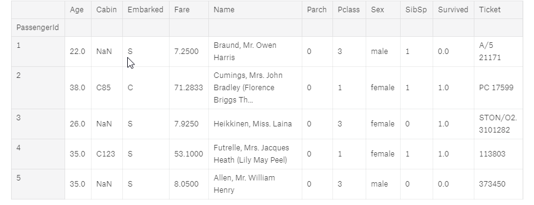
Filtrowanie
Przykłady wybierania wierszy:
- Jak w pythonie do każdej listy można wybierać przez indeks
full[:10] # Pierwszych 10 elementów
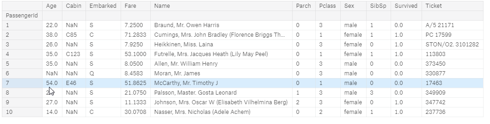
- 5 ostatnich elementów
full[-5:]
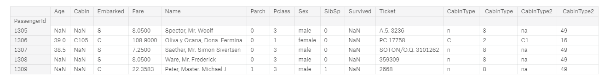
- Konkretnie od konkretnego wiersza idąc co 2, 891 - to pierwszy wiersz z bazy test_df
SURV = 891
full[SURV:SURV+10:2] # Like in regular Python you can get to the Item by Index
- filtrowanie po kolumnie
full[(full['Age'] > 5.0) & (full['Age'] < 7.0 ) ] #filter data by columns
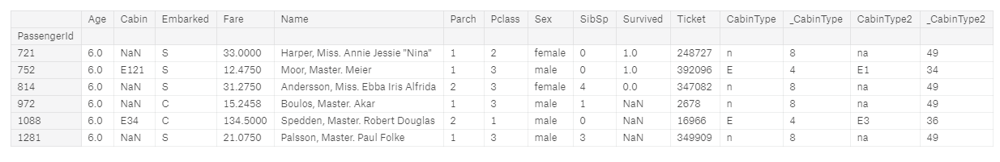
- Filtrowanie po tekście
full[(full['Cabin'].str.contains('B2',na=False)) ] #filter data by columns
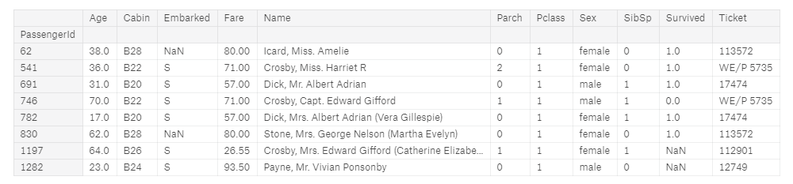
df.isnull()
Najważniejsze jest znalezielenie pustych wierszy. .isnull() zwraca nam cały zbiór z wartościami False,True czy jest pusta, .sum grupuje je dla wszystkich kolumn.
full.isnull().sum() # Check with alues are empty
Age 263
Cabin 1014
Embarked 2
Fare 1
Name 0
Parch 0
Pclass 0
Sex 0
SibSp 0
Survived 418
Ticket 0
CabinType 0
_CabinType 0
CabinType2 0
_CabinType2 0
dtype: int64
- Wartości Age,Cabin, Embarked, Fare, trzeba będzie uzupełnić danymi przed dalszym przetwarzaniem
- Istnieje także wykres który pokazuje puste wartości
#Missing values in the plot
import missingno as msno
msno.matrix(full)
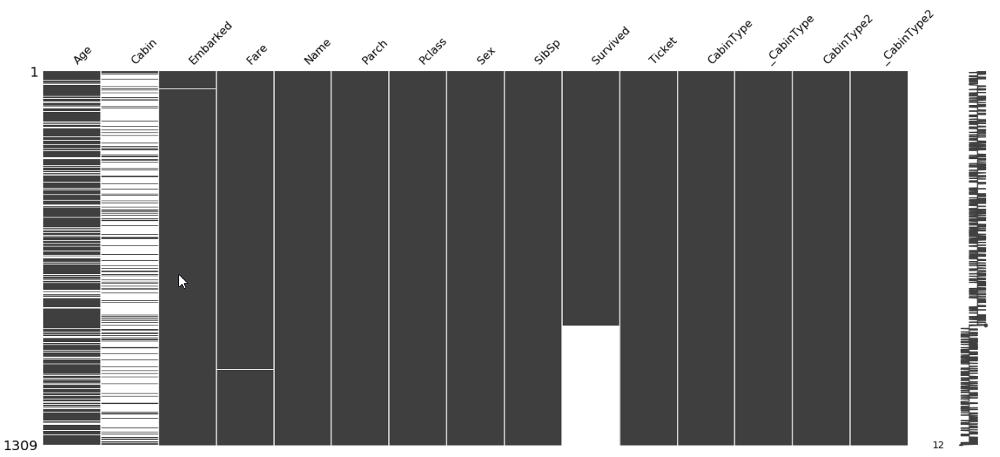
groupby()
Dane też można grupować by zobaczyć jak wyglądają zmienne na poszczególne grupy (np: sumujemy sobie ilość osób które przeżyły w podziale na klasy i płeć)
train_df.groupby(['Pclass','Sex'])['Survived'].sum() # grouping data
Pclass Sex
1 female 91
male 45
2 female 70
male 17
3 female 72
male 47
Name: Survived, dtype: int64
Podstawowe operacje: R
Podstawowe funkcje można znaleść w:
https://www.rstudio.com/wp-content/uploads/2016/10/r-cheat-sheet-3.pdf
https://s3.amazonaws.com/assets.datacamp.com/blog_assets/Tidyverse+Cheat+Sheet.pdf
https://www.rstudio.com/wp-content/uploads/2015/02/data-wrangling-cheatsheet.pdf
Najpierw importujemy biblioteki
library(tidyverse) # metapackage with lots of helpful functions
list.files(path = "../input")
- tidyverse - kolekcja paczek do data-science, zawiera w sobie już wiele potrzebnych paczek
W R podobnie jak w python podstawowym obiektem na którym operujemy jest data.frame który jest 2 wymiarową tablicą z kolumnami i wierszami. W przypadku większych danych jest jeszcze struktura data.table ale dla 1309 tysiąca wierszy wystarczy zwykły data.frame.
read_csv()
train <- read_csv('../input/train.csv')
test <- read_csv('../input/test.csv')
import danych, funkcja już wie że pierwszy wiersz opisuje kolumny, nie trzeba to zaznaczać w metodzie.
rbind()
Połączenie wierszy danych, tak żeby móc zobaczyć pełną informację o danych. Nie można łączyć danych o różnych ilościach kolumn dlatego do kolumny test$Survived dodajemy pustą informację.
test$Survived <- NA
full <- rbind(train, test)
str()
Podaje podstawe informacje o danych, jak typ - przykłady wartości.
str(full)
Classes ‘tbl_df’, ‘tbl’ and 'data.frame': 1309 obs. of 12 variables:
$ PassengerId: num 1 2 3 4 5 6 7 8 9 10 ...
$ Survived : num 0 1 1 1 0 0 0 0 1 1 ...
$ Pclass : num 3 1 3 1 3 3 1 3 3 2 ...
$ Name : chr "Braund, Mr. Owen Harris" "Cumings, Mrs. John Bradley (Florence Briggs Thayer)" "Heikkinen, Miss. Laina" "Futrelle, Mrs. Jacques Heath (Lily May Peel)" ...
$ Sex : chr "male" "female" "female" "female" ...
$ Age : num 22 38 26 35 35 NA 54 2 27 14 ...
$ SibSp : num 1 1 0 1 0 0 0 3 0 1 ...
$ Parch : num 0 0 0 0 0 0 0 1 2 0 ...
$ Ticket : chr "A/5 21171" "PC 17599" "STON/O2. 3101282" "113803" ...
$ Fare : num 7.25 71.28 7.92 53.1 8.05 ...
$ Cabin : chr NA "C85" NA "C123" ...
$ Embarked : chr "S" "C" "S" "S" ...
- attr(*, "spec")=
.. cols(
.. PassengerId = col_double(),
.. Survived = col_double(),
.. Pclass = col_double(),
.. Name = col_character(),
.. Sex = col_character(),
.. Age = col_double(),
.. SibSp = col_double(),
.. Parch = col_double(),
.. Ticket = col_character(),
.. Fare = col_double(),
.. Cabin = col_character(),
.. Embarked = col_character()
.. )
dim()
Zwraca rozmiar data.frame (wiersze i kolumny )
dim(full)
1309 12
head()
Zwraca kilka pierwszych wierszy do rozeznania się.
head(full)
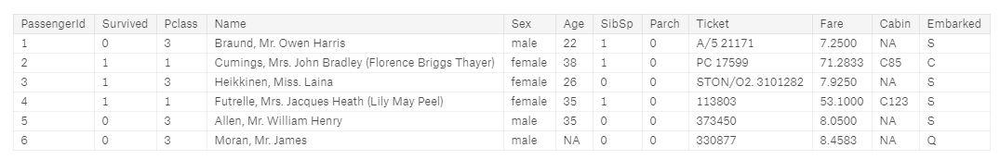
summary()
summary(full)
Zwraca podstawowe informacje o kolumnach - jak liczba pustych wartości, wartość minimalna, maksymalna, mediana itp… Już widać że kilka kolumn ma puste wartości które to trzeba będzie uzupełnić póżniej. (NA’s)
PassengerId Survived Pclass Name
Min. : 1 Min. :0.0000 Min. :1.000 Length:1309
1st Qu.: 328 1st Qu.:0.0000 1st Qu.:2.000 Class :character
Median : 655 Median :0.0000 Median :3.000 Mode :character
Mean : 655 Mean :0.3838 Mean :2.295
3rd Qu.: 982 3rd Qu.:1.0000 3rd Qu.:3.000
Max. :1309 Max. :1.0000 Max. :3.000
NAs :418
Sex Age SibSp Parch
Length:1309 Min. : 0.17 Min. :0.0000 Min. :0.000
Class :character 1st Qu.:21.00 1st Qu.:0.0000 1st Qu.:0.000
Mode :character Median :28.00 Median :0.0000 Median :0.000
Mean :29.88 Mean :0.4989 Mean :0.385
3rd Qu.:39.00 3rd Qu.:1.0000 3rd Qu.:0.000
Max. :80.00 Max. :8.0000 Max. :9.000
NAs :263
Ticket Fare Cabin Embarked
Length:1309 Min. : 0.000 Length:1309 Length:1309
Class :character 1st Qu.: 7.896 Class :character Class :character
Mode :character Median : 14.454 Mode :character Mode :character
Mean : 33.295
3rd Qu.: 31.275
Max. :512.329
NAs :1
Filtrowanie
- Dane można zaznaczać przez indeksy
full[1:9,]
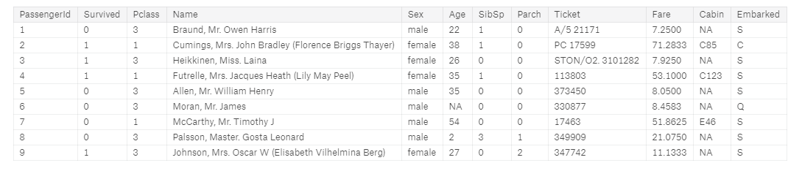
- Mozna też filtrować po kolumnach
full[,c("Survived","Pclass")]
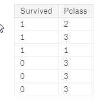
Lub przez select z dplyr
select(full,Survived,Pclass)
- Do bardziej zaawansowango filtrowania po wartościach używa się biblioteki dplyr
library(dplyr)
filter(full, Age > 5.0, Age < 7.0 )
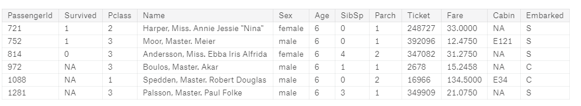
- Dodatkowo można to kaskadować na kolejne wyrażenia z dplyr. W tym wypadku nie trzeba za każdym razem zaznaczać danych (full)
full %>%
filter(Age > 5.0, Age < 7.0 ) %>%
select(Survived,Pclass)
Grupowanie
- Do sumowania i groupowania przydaje się dplyr, tutaj wymagane jest jeszcze usunięcie pustych wartości survived ponieważ w przeciwnym wypadku pojawi się N/A w wyniku.
full %>%
drop_na(Survived) %>%
group_by(Pclass,Sex) %>%
summarise(Survived = sum(Survived))
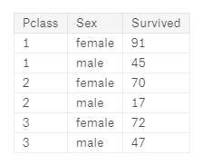